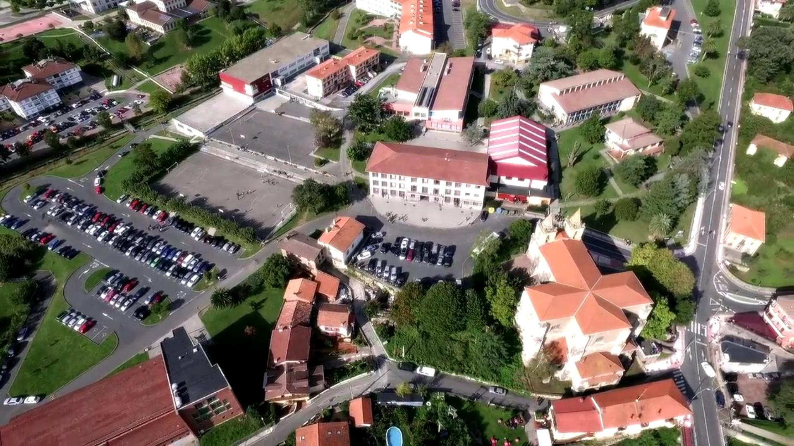
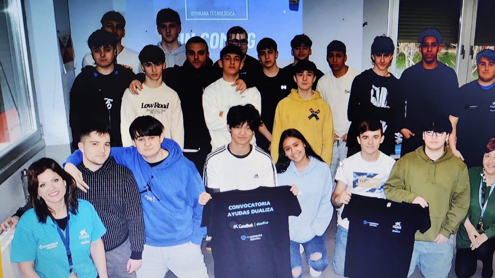

Nuestra Historia
Los Virtuales nació como una idea entre compañeros apasionados por la tecnología mientras estudiábamos en el Centro de Formación Somorrostro, en Muskiz. Compartíamos la misma motivación: aprender, innovar y crear soluciones útiles para ayudar a personas y empresas.
Lo que comenzó como pequeños proyectos académicos fue evolucionando poco a poco hasta convertirse en una consultoría tecnológica con servicios profesionales. Con esfuerzo y dedicación conseguimos desarrollar conocimientos en sistemas, redes, soporte técnico y recuperación de datos.
Actualmente trabajamos ofreciendo soluciones modernas y seguras, siempre priorizando la confianza, la cercanía con el cliente y la calidad del servicio.
Donde Todo Empezó...

